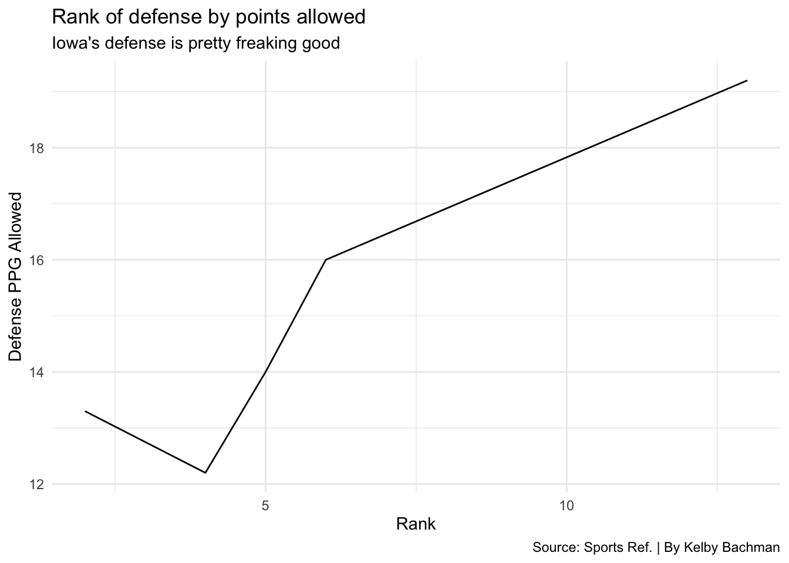
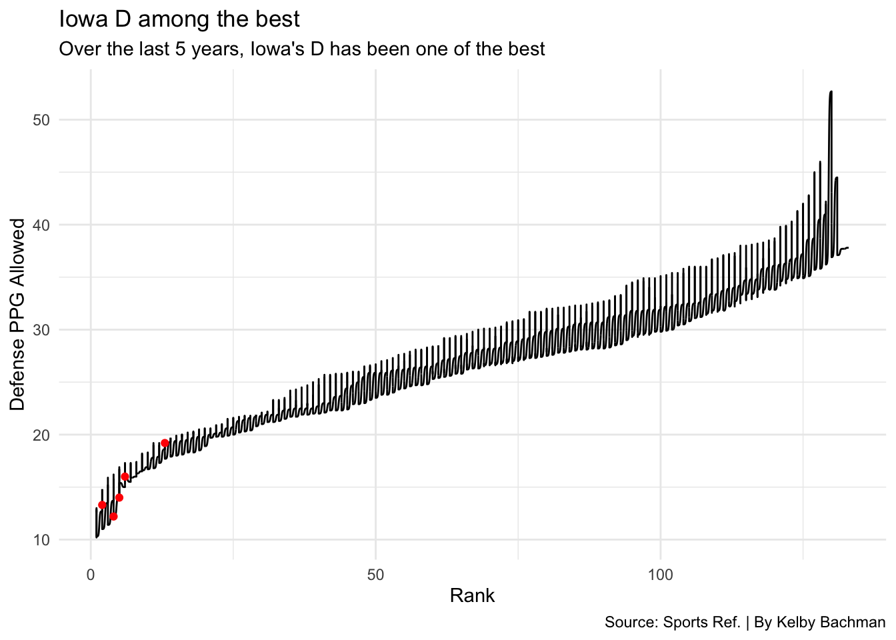

Offense. A seven-letter word that everyone loves. No matter what sport it is, we all love offense. Baseball, basketball, wrestling, tennis, etc. Offense makes things exciting. Unless your an Iowa football fan. Then you’d rather see punting and defense. And you’re totally fine with that (for the most part). Would it kill Iowa to at least try and be more creative on offense? Spice things up a bit? Nevermind. Back to the point.
As awful, putrid, pathetic, etc. as the Iowa offense has been, the defense has been the exact opposite. They’ve been dominant, aggressive, the backbone of the entire team. I would even say ELITE. Yes, that’s right. The Iowa defense is (and has been) ELITE. Over the last five years, I might go as far as to say they are the best in the nation, especially given how awful the offense has been. Let’s take a look at the data.
So, at one point, the Iowa offense did average almost 32 PPG, good enough to rank 40th in the nation. Oh, but did I mention that was the COVID year? So maybe put an asterisk next to that year. Remove that year and they have ranked 87, 99, 123 and 124. Ouch. So how about the defense? How good have they been?
Code
iowad <- defense |>filter(School =="Iowa")iowad |>ggplot() +geom_line(data=iowad, aes(x=Rk, y=Pts)) +theme_minimal() +labs(x="Rank",y="Defense PPG Allowed",size="Total",title="Rank of defense by points allowed",subtitle="Iowa's defense is pretty freaking good",caption="Source: Sports Ref. | By Kelby Bachman" )

Yeah, they’ve been really good. They’ve ranked 5th, 6th, 13th, 2nd and 4th. It’s hard to put into words how remarkable those numbers are when you look at how bad the offense has been. The offense cannot sustain drives. They can’t put points on the board. But the defense just doesn’t let the other team score, either. So, how does this compare with other teams from around the country? Let’s have a look.
Code
iowad |>ggplot() +geom_bump(data=defense, aes(x=Rk, y=Pts)) +geom_point(data=iowad, aes(x=Rk, y=Pts), color="red") +theme_minimal() +labs(x="Rank",y="Defense PPG Allowed",size="Total",title="Iowa D among the best",subtitle="Over the last 5 years, Iowa's D has been one of the best",caption="Source: Sports Ref. | By Kelby Bachman" )

I know, I know. I chose red for a color. But that’s because yellow doesn’t show up as well. But the point is, over the last five years, the defense has been one of the best in the country. When you take into account at how the offense has been one of the worst in the country, it only magnifies how ridiculously good the defense has been.